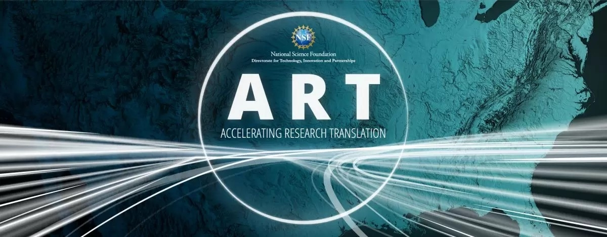
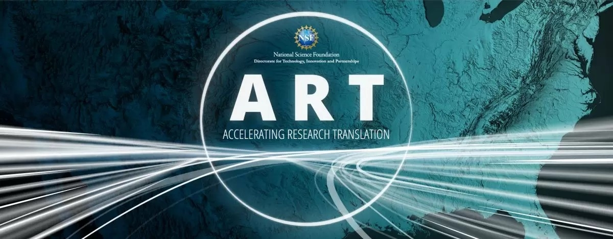

David Ebert
David Ebert
Interim Chief AI Officer
Associate Vice President of Research and Partnerships
Director, Data Institute for Societal Challenges (DISC)
Gallogly Chair in Engineering
Professor, ECE and Computer Science
Telephone: 405-325-4275
Email: ebert@ou.edu
David Ebert is an Associate Vice President for Research and Partnerships, the Gallogly Chair Professor of Electrical and Computer Engineering, and Data Institute for Societal Challenges (DISC) at the University of Oklahoma. He is an IEEE Fellow, an adjunct Professor of Electrical and Computer Engineering at Purdue University and Director of the Visual Analytics for Command Control and Interoperability Center, a U.S. DHS Emeritus Center of Excellence. Previously, he was the Silicon Valley Professor of Electrical and Computer Engineering at Purdue University, Director of the Purdue Integrated Data Science Initiative, and Director of the Center for Education and Research in Information Assurance and Security (CERIAS). He received his Ph.D. in Computer and Information Science from The Ohio State University and performs research in visual analytics, novel visualization techniques, interactive machine learning and explainable AI, human-computer teaming, advanced predictive analytics, and procedural abstraction of complex, massive data. He is the recipient of the 2017 IEEE Computer Society vgTC Technical Achievement Award for seminal contributions in and helping define the field of visual analytics, and was elected to the IEEE vgTC Visualization Academy in 2019. He is currently a member of the IEEE Ethics and Membership Conduct Committee and the IEEE-USA Research and Development Policy Committee.
Interests
Visual Analytics
Human-Computer Teaming
Trustable AI
Data Science
Machine Learning
Education
PhD in Computer and Information Science,
The Ohio State UniversityMS in Computer and Information Science,
The Ohio State UniversityBS in Computer and Information Science,
The Ohio State University
Experience and Awards
- National Science Foundation's ART: Intensifying Translation of Research in Oklahoma (InTRO) grant
- Silicon Valley Professor of Electrical and Computer Engineering
- Director, U.S. DHS Center of Excellence in Visual Analytics
- Director, Center for Education and Research in Information Assurance and Security
- Director, Purdue University Visual Analytics Center
- Professor, School of Electrical and Computer Engineering, Purdue University
- IEEE Fellow
- Entrepreneur Leadership Academy Fellow
- University Faculty Scholar
- IEEE Computer Society Leadership
- IEEE Computer Society vgTC Visualization Academy
- IEEE Computer Society vgTC Technical Achievement Award
- United States Coast Guard Certificate of Merit, VACCINE Social Media Analytics and Reporting Toolkit Project Team
- U.S. Coast Guard Meritorious Team Commendation, U.S. Coast Guard, Port Resilience for Operational Tactical Enforcement to Combat Terrorism (PROTECT) Team
- Impact Award, DHS S&T
- Award of Excellence, DHS S&T
 
